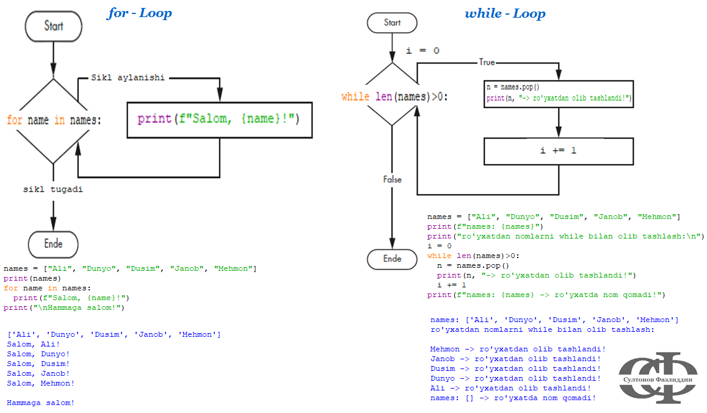

baho <- 4 # berilgan son
if (baho == 3) { # 1- shart
cat("qoniqarli") # bajariladi, agar 1-shart == TRUE
} else if (baho == 4) { # 2-shart
cat("yaxshi") # bajariladi, agar 2-shart == TRUE
} else if (baho == 5) { # 3- shart
cat("a'lo") # bajariladi, agar 3-shart == TRUE
} else { # aks holda
cat("qoniqarsiz") # bajariladi, hech qaysi shart qanoatlantirilmasa
}
#> yaxshiControl flows
Control flows, ya’ni Google akani tarjimasi bo’yicha boshqaruv tuzilmalar - ma’lum buyruqlarni ketma-ket tarzda shartli ravishda bajarilishini nazorat qilish imkonini beradi. Boshqacha aytganda biror bir buyruq, ifoda yoki funksiya ishlaydi, qachonki berilgan ma’lum bir shart qanoatlantirilsa. Shartni tekshirish ko’pincha bir nechta elementlardan iborat ma’lumotlar tuzilmasida yoki funksia ichida sikllar orqali amalga oshiriladi.
if & if-else & else if/elif
Faqat bitta shart berilgan bo’lsa if ishlatiladi. Misol uchun biror son, aytaylik baho berilgan: son = 4, (4 - yaxshi baho deb hisoblaymiz). Agar shart bo’yicha bahoni tekshirish kerak bo’lsa if - ni o’zini qo’llaymiz. Agar birinchi shart qanoatlantirilmagan aksincha holat uchun ham shart qo’llasak, else ham ishlatiladi. Misoldagi shart boyicha, Agar (if) berilgan son 4 ga teng (son == 4) bo’lsa (shart) ekranga yaxshi (buyruq) deb, aks holda (else) ekranga yaxshi emas (buyruq) deb chiqaramiz.
Agar bittadan ko’p yani bir necha shartlar tekshirilganda R uchun else if va Python uchunelif ifodasini ishlatishimiz mumkin. Agar if- blok yoki else if/elif- blokda shartlar qanoatlantirilmasa, else - blok har doim bajariladi. Misol tariqasida yuqoridagi misolga bir dan ko’p shartlarini qo’shamiz. Shartlar quyidagicha bo’lishi mumkin: Agar baho == 3 -> qoniqarli, baho == 4 -> yaxshi, baho == 5 -> a’lo, aks holda -> qoniqarsiz (imtihondan o’tilmadi).
baho = 5 # berilgan son
if baho == 3: # 1- shart
print("qoniqarli") # bajariladi, agar 1-shart == TRUE
elif baho == 4: # 2-shart
print("yaxshi") # bajariladi, agar 2-shart == TRUE
elif baho == 5: # 3- shart
print("a'lo") # bajariladi, agar 3-shart == TRUE
else: # aks holda
print("qoniqarsiz") # bajariladi, hech qaysi shart qanoatlantirilmasa
#> a'loR da else if-sharti yopuvchi qavsi } bilan bir qatorda turishi kerak ya’ni:
if (shart) {
buyruq
} else {
buyruq }
}
Python da if-shartidan keyin ikki nuqta : qo’yiladi va bajariladigan kod yangi qator boshidan (odatda) 4 marta bo’sh o’rin qoldirib yoziladi:
if shart:
…. buyruq
else:
…. buyruq
for - loop
Sikllar odatda biror bir amalni biror ketma-ketlikda joylashgan elementlar ustidan (masalan ro’yxat, vektor) bir necha marta bajarish uchun ishlatiladi. for- va while- sikldan R va Pythonda yuqoridagi if-shatidagi ko’rinishga ega. Bundan tashqari R da repeat- sikli ham bor.
for- siklini agar ifoda nechi marta bajarilishi kerakligi oldindan aniq bo’lsa ishlatishimiz mumkin, boshqacha aytganda dasturga siklni nechi marta aylanishi kerkaligi oldindan belgilab beriladi. Ko’pincha biror bir ifoda masalan biror ro’yxat ichidagi hamma elementlar uchun qo’llanishilshi kerak bo’lganda for ishlatilsa boladi. Bunda shu to’plam ichida biror bir ifodani/amalni iteratsiya qilib ya’ni, takrorlab chiqiladi. Bunday holllaga hayotimizdanam ko’plab misollar keltirish mumkin.
| Takrorlanuvchi shart | Takrorlanuvchi harakat/ifoda | To’plam (masalan ro’yxat) |
|---|---|---|
| Lagandagi 5 somsani yeyish kerak | Somsa yeyish | lagandagi 5 somsalar |
| To’yga mehmonlaga taklifnoma | taklifnoma yozish | Mehmonlar |
| 1 dan 10 gacha sana | 10 gacha bo’lgan har bir sonni nomini aytish | [1, 2, 3, 4, 5, 6, 7, 8, 9, 10] |
| Uch marta “Urraa!” deb qichqirish | “Urraa!” deb qichqirish | [1, 2, 3] |
R:
for (element in sequence) {
\(~~~~\) code
}
Python:
for element in sequence:
\(~~~~\) code
Code
#> [1] 1 2 3 4 5 6 7#> [1, 2, 3, 4, 5, 6, 7]For- sikli qiymatlarga yoki indexlarga asoslanib alanishi mumkin. Indexga asoslansa Pythonda range(startIncl, endExl), R da start:end yoki seq(satrt, end) metodlari qo’llaniladi. Masalan biror ro’yxat elementlari ustida for-siklini qiymat va indeks asosida qo’llab ko’ramiz.
cities <- c("Qarshi", "Toshkent", "Xiva", "Denov","Shahrisabz", "Fargona")
# qiymat asosisda ----------------------------
for (city in cities){
cat(paste0(city, ", "))
}
#> Qarshi, Toshkent, Xiva, Denov, Shahrisabz, Fargona,
cat("tugadi")
#> tugadi
# indeks asosisa -----------------------------
for (i in seq_along(cities)){
cat(paste(i, "-nchi ism:", cities[i], "\n"))
}
#> 1 -nchi ism: Qarshi
#> 2 -nchi ism: Toshkent
#> 3 -nchi ism: Xiva
#> 4 -nchi ism: Denov
#> 5 -nchi ism: Shahrisabz
#> 6 -nchi ism: Fargona
cat("sikl tugadi")
#> sikl tugadicities = ["Qarshi", "Toshkent", "Xiva", "Denov","Shahrisabz", "Fargona"]
# qiymat asosisda ----------------------------
for city in cities:
print(city, end = ", ")
#> Qarshi, Toshkent, Xiva, Denov, Shahrisabz, Fargona,
print("tugadi")
#> tugadi
# indeks asosisa -----------------------------
for i in range(len(cities)):
print(f"{i}-chi ism: {cities[i]}")
#> 0-chi ism: Qarshi
#> 1-chi ism: Toshkent
#> 2-chi ism: Xiva
#> 3-chi ism: Denov
#> 4-chi ism: Shahrisabz
#> 5-chi ism: Fargona
print("sikl tugadi")
#> sikl tugadiwhile - loop
For-sikli kabi while- siklida ham biror ifoda siklda takroran bajariladi. For- sikldan farqli ravishda bu yerda siklni nechi marta aylanish kerakligi aniq bo’lmaydi. Toki shart qanoatlantirlgan kean, siklda ifoda takrorlanaveradi, yani qachonki shart bajarilmasa dastur sikl ichidagi amalni bajarishdan toxtaydi. Masalan “To’ymaginimizcha ovqatni yeyaveramiz” - ya’ni toki bu yerdagi shart (hali to’ymadim) qanoatlantrilsa, ovqat yeyishdan toxtamaymiz. Qachonki shart qanoatlantrililmasa (tOydim) ovqat yeyishdan to’xtaymiz. Yoki boshqa misol, chanqog bosilmaguncha suv(bir stakan, ikki stakan,…) suv ichuramiz.
While siklida nechi marta aylanishi aniq bolmagani uchun, unga qachondir shartni qanoatlantirmaydigan logika qurisch kerak. Bunig uchun boshida, initial (boshlovchi) son belgilanadi, bu son takroryi harakatni ifodalaydi va kupincha i bilan belgilanadi (lekin qanday nomlash ixtiyoriy). Keyin sikl ichida ham shu son oshirilib (yoki kamaytirilib, agar oxiridan boshiga yurish kerak bolsa) boriladi.
Aks holda, tugallanmaydigan sikga tushib qolinadi, va buni kuch bilan toxtatish kwerak boladi!! Agar shunday hol bo’lib qolsa klaviaturada strg + C tugmalarni bosish dasturni majburiy to’xtadai
Quyidagi misolda berilgan songacha bo’lgan raqamlar yigindisini hisoblaymiz. Masalan berilgan son n = 8, Summa = 1+2+3+4+5+6+7+8 = 36.
Code
##| classes: code-input
n <- 8 # Berilgan son
s <- 0 # boshlangich yigindi
count <- 0 # siklni sanash uchun initial son
x <- 1 # harakat boshlanishi ozgaruvchiga uatiladi
while(x <= n){ # har aylangada shart(i<8) tekshiriladi, false bolsa toxtaydi
count <- count + 1 # sikl sanovchi son har aylanganda 1 taga oshiriladi
s <- s + x # ayni paytda uzgaruvchi qabul qilgan qiymat yigindiga qoshiladi
cat(x,"-nchi aylanish: yigindi =", s, "\n")
x <- x +1 # harakatni ifodalovchi son 1 taga oshiriladi
}
cat("1 dan 8 gach bo'lgan raqamlar yigindisi: ", s)
cat("\nSikl", count, "marta aylandi")#> 1 -nchi aylanish: yigindi = 1
#> 2 -nchi aylanish: yigindi = 3
#> 3 -nchi aylanish: yigindi = 6
#> 4 -nchi aylanish: yigindi = 10
#> 5 -nchi aylanish: yigindi = 15
#> 6 -nchi aylanish: yigindi = 21
#> 7 -nchi aylanish: yigindi = 28
#> 8 -nchi aylanish: yigindi = 36
#> 1 dan 8 gach bo'lgan raqamlar yigindisi: 36
#> Sikl 8 marta aylandiCode
n = 8
summa = 0
sana = 0
i = 1
while i <= 8: # har bir aylanganda shart tekshiriladi
sana += 1 # sana = sana + 1 ning qisqartmasi
summa += i
print(f"{i}-chi aylanish: yigindi = {summa}")
i += 1 # isteration nummerni bittaga oshirishni unutmaslik kerak!
print(f"1 dan 8 gach bo'lgan raqamlar yigindisi: {summa}")
print((f"Sikl {sana} marta aylandi"))#> 1-chi aylanish: yigindi = 1
#> 2-chi aylanish: yigindi = 3
#> 3-chi aylanish: yigindi = 6
#> 4-chi aylanish: yigindi = 10
#> 5-chi aylanish: yigindi = 15
#> 6-chi aylanish: yigindi = 21
#> 7-chi aylanish: yigindi = 28
#> 8-chi aylanish: yigindi = 36
#> 1 dan 8 gach bo'lgan raqamlar yigindisi: 36
#> Sikl 8 marta aylandibreak & continue
break va continue lar biror bir shart qanoatlantriliganda siklni ertaroq tark etish imkonini beradi. break orqali, agar biror shart qanoatlantirilsa butunlay sikldan chiqib ketiladi. Agar siklda joriy takrorlanish, ya’ni faqat biror qadam tashlab ketilishi kerak bolsa unda continue (Python) yoki next (R) foydalaniladi.
break - misol uchun 10 gacha bolgan sonlarni yigindisini faqat yigindi 15 ga teng bolguncha hisoblaymiz, agar yigindi 15 ga yetsa sikldan chiqib ketiladi
Code
sonlar <- 1:10
# for -----------------------------------------
y = 0 # yigindi (boshlangich)
for (son in sonlar){
y <- y + son
if (y == 15){
break
}
}
cat("Yigindi for- siklda: ", y)
# while ---------------------------------------
suma <- 0
iter <- 1
while(iter <= length(sonlar)){
suma <- suma + iter
if (suma == 15){
break
}
iter <- iter +1
}
cat("\nYigindi while- siklda: ", suma)Code
numbers = [son for son in range(1, 11)]
# for ------------------------------------
total = 0
for num in numbers:
if total == 15:
break
total += num
print("Yigindi for- siklda: ", total)
# while ---------------------------------
sum_son = 0
qadam = 0
while qadam <= len(numbers):
if sum_son == 15:
break
sum_son += qadam
qadam += 1
print("Yigindi while- siklda: ", sum_son)#> Yigindi for- siklda: 15
#> Yigindi while- siklda: 15#> Yigindi for- siklda: 15
#> Yigindi while- siklda: 15continue - bunga misol qilib yana 10 gacha bolgan sonlar ketma ketligini olamiz, va shu qatordagi rqamalr yigindisini hisoblaymiz. Agar ro’yxatda sonlar mavjud bo’lmasa( R da NA, Pythonda None yoki NaN), bu sonlar uchun siklda aylanayotganda yigindi hisoblash amalni qo’llamaymiz, boshqacha aytganda bu yerdan hakalab utib ketiladi.
Code
ruyhat_na <- 1:10
ruyhat_na[c(5,8, 9)]<-NA
ruyhat_na
# for ------------------------------------------
sum_na <- 0
for (m in ruyhat_na){
if (is.na(m)) { # is.na(x) Na ni tekshiradi
next
}
sum_na <- sum_na + m
}
cat("Yigindi by for: ", sum_na)
# while -----------------------------------------
na_sum <- 0
k <- 1
while(k <= length(ruyhat_na)){
if (is.na(ruyhat_na[k])){
k <- k + 1
next
}
na_sum <- na_sum + ruyhat_na[k]
k <- k + 1
}
cat("\nYigindi by while: ", na_sum)Code
#import math
ruyxat = list(range(1, 11))
pos = [4, 7, 8]; target = [None, None, None]
for idx, val in zip(pos, target):
ruyxat[idx] = val
print(ruyxat)
# for -----------------------------------------------
tot_sum = 0
for r in ruyxat:
if r is None:
continue
tot_sum += r
print(f"Yigindi by for: {tot_sum}")
# while ---------------------------------------------
sum_total = 0
elmt = 0
while elmt < len(ruyxat):
if ruyxat[elmt] is None:
elmt += 1
continue
sum_total += ruyxat[elmt]
elmt += 1
print(f"Yigindi by while: {sum_total}")#> [1] 1 2 3 4 NA 6 7 NA NA 10
#> Yigindi by for: 33
#> Yigindi by while: 33#> [1, 2, 3, 4, None, 6, 7, None, None, 10]
#> Yigindi by for: 33
#> Yigindi by while: 33While- siklda etibor berilish kerak bolgan narsa, while da sikl index asosida aylanadi. For-siklda for element in ruyxat qilib shu element ustida sikl ichida biror amal bajarish mumkin, masalan summe = summe + element. Lekin while- siklidigi iteratsiya son, siklni aylanishini taminlovchi yoki sanab boruvchi son hisoblanadi va sikl har bir aylanganda tartibli ravishda o’sib boradi. Ushanchun sikl ichida biror ro’yxat elementiga murojat qilish uchun bu sonni ro’xatni indeksi sifatida qo’llab, shu indeksdagi bo’yicha joylashgan ro’yxat elementiga murojaat qilish mumkin, masalan sikl while element < len(ro’yxat) sharti bo’yicha aylansa, royxatdagfi elementga sikl ichida ro’yxat[element] kurinishda murojaat qilish kerak
Agar qandaydir muammo for- sikli bilan yoki boshqa funksiya bilan yechiladigan bolsa, while- siklini shaxsan man ko’p ishlatishni tavsiya qilmagan bo’lardim. Chunki while- siklda tez tugallanmas siklga tushib qolish oson, agar bazi narsalar etiborga olinmasa, yoki esdan chiqarilsa, masalan iteratsiya sonini sikl ichida birga oshirish, yoki notugri joyda oshirib quyish va hokozo.
Quyidagi rasmda for- va while- sikli sexemasi tasvirlangan (Grafik (Sweigart 2020) dan o’zlashtirilgan). 
repeat - loop in R
Biror bir blokni/ifodani bir necha marta sikl orqali takrorlash uchun yuqoridagi sikl turlaridan tashqari R da yana repeat- sikli mavjud. Boshqalardan bu siklni farqi, bunda siklni tugatadiga shartlar bolmaydi. Bu sikl faqat majburiy if va break orqali toxtatiladi. Masalan biz sonlarni kvadrat darajasi to 150 ga teng yoki bo’liguniga qadar uzini o’ziga kupaytirib chiqamiz. Ya’ni 1 dan boshlab sonlarni kvadrat darajaga oshiramiz, daraja 150 dan oshib ketmasligi kerak.
try: & except in Python
Dastrurlash dunyosida bir gap (qoida deysayam boladi) bor ekan: Kutilmagan narsalarni kutish. Bu bilan qandaydir dastur yozib, orqaga suyanib run qilganda, qayerdandir qandaydir jaloba kelishi nazarda tutilgan. Bunaqa holat, manda ayniqsa endi urganayotgan boshlovchi sifatida deyarli har doim uchraydi;). Objektlar ustida qandaydir ammalr bajarganda hatoliklar (Error) har doim uchrab turadi. Ko’pincha uchraydiganlari masalan:
- ValueError – Agar kutilgan qiymat berilmasa, masalan yoshni hisoblash uchun tug’ilgan yil kerak va bu butun son shaklidan bo’lishi kerak. Buni uchun foydalanuvchidan tugilgan yili suralganda, bilmasdan butun son emas, o’nli qilib kiritib qo’ysa, yoki matn shaklida, bu hatolik kelib chiqadi.
TypeError– Sonlar sutida amal bajargand, ularni turi bir-biriga mis kelmasa, malasan ikki sonni bo’lganda, ularni biri boshqa turga ega bo’lsa, masalan matn shaklida: x = 40, y = “10” -> x / y.KeyError– bu asosan Python lug’atlarida (dictionaries) uchraydi, agar mavjud bo’lmagan kalit chaqirilganda.ZeroDivisionError:– Bu hatolik sonni 0 ga bo’lish amali bajarilganda kelib chiqadi, chunki sonni 0 ga bolib bolmaydi.NameError:– bu dastur paytida qandaydir mavjud bo’lmagan o’zgaruvchi nomi bilan biror bir o’zgaruvchiga murojaat qilingada kelib chiqadi.va hokozo …
Bunday hatoliklarda, dastur ishga tushirilganda shu hatoliklar uchragan joygacha kod bajarilada, hatolik yuz bersa u yogiga o’tmaydi, demak dastur to’xtab qoladi. Shunday hatoliklarni oldini olish uchun Python da try: va except lardan foydalaniladi. try- iofasini ishlash prinsipi quyidagicha:
Quyidagi misolda vazifa quyidagicha: ikkita a va b ro’yxat berilgan. Ro’yxat (a) elementlarini ro’yxatdagi (b) elementlaga bo’lish kerak. Buni uchun for- sikldan foydalaniladi. Ro’yxat elementöari ichida 0 va matn shaklidagilari ham bo’lgani sababli yuqoridagi hatoliklar uchrashi aniq. Buni try- va except bilan oldini olish kerak.
a = [1, 0, 4, 5, 4, 8]
b = [2, 1, 3, 0, "3", 4]
print("a: ", a)
print("a: ", b)
print("----------------------------------")
for x, y in zip(a,b):
try:
z = x/y
print(f"{x} / {y} = {z}")
except ZeroDivisionError:
print(f"{x} / {y} = ZeroDivisionError: Sonni 0 ga bo'lib bo'lmaydi!")
x = 0
y = 0
except TypeError:
print(f"{x} / {y} = TypeError: Sonlar bir xil turda (int) bo'lishi kerak!")
x = int(x)
y = int(y)
print("\nTugadi, topshiriq muvaffaqiyatli bajarildi.")#> a: [1, 0, 4, 5, 4, 8]
#> a: [2, 1, 3, 0, '3', 4]
#> ----------------------------------
#> 1 / 2 = 0.5
#> 0 / 1 = 0.0
#> 4 / 3 = 1.3333333333333333
#> 5 / 0 = ZeroDivisionError: Sonni 0 ga bo'lib bo'lmaydi!
#> 4 / 3 = TypeError: Sonlar bir xil turda (int) bo'lishi kerak!
#> 8 / 4 = 2.0
#>
#> Tugadi, topshiriq muvaffaqiyatli bajarildi.References
Guy Hart-Davis, Ted Hart-Davis. 2022. Teach Yourself VISUALLY Python. John Wiley & Sons, Inc.
Inden, Michael. 2022. Einfach Python. dpunkt.verlag GmbH.
Manderscheid, Katharina. 2017. Sozialwissenschaftliche Datenanalyse mit R. Springer Fachmedien Wiesbaden.
McKinney, Wes. 2019. Datenanalyse mit Python. dpunkt.verlag GmbH.
Peng, Roger D. 2020. R Programming for Data Science.
Sweigart, Al. 2020. Routineaufgaben Mit Python Automatisieren. 2nd ed. dpunkt.verlag GmbH.
Weigend, Michael. 2019. Python 3 : Lernen und professionell anwenden. Das umfassende Praxisbuch,. 8th ed. Springer Gabler.